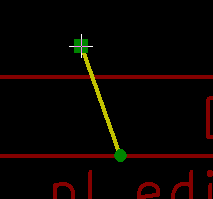

Manuel de référence
Copyright
Ce document est la propriété des contributeurs ci-dessous, copyright © 2015. Vous pouvez le distribuer et/ou le modifier selon les termes de la GNU General Public License (http://www.gnu.org/licenses/gpl.html), version 3 ou ultérieure ou bien selon la licence Creative Commons Attribution (http://creativecommons.org/licenses/by/3.0/), version 3.0 ou ultérieure.
Contributeurs
Jean-Pierre Charras, Marc Berlioux.
Traduction
Marc Berlioux <marc.berlioux@gmail.com>, 2015-2016.
Retours
Merci de signaler vos corrections de bugs, suggestions ou nouvelles versions ici :
-
Documentation de KiCad : https://github.com/KiCad/kicad-doc/issues
-
Bugs logiciel KiCad : https://bugs.launchpad.net/kicad
-
Traductions de KiCad : https://github.com/KiCad/kicad-i18n/issues
Date de publication et version du logiciel
23 mai 2015.
1. Introduction à Pl_Editor
Pl_Editor est un outil d'édition et de mise en page de cartouches personnalisés .
Le bloc titre, associé aux références du cartouche et aux autres éléments graphiques (logos) sera appelé ici une mise en page.
Les éléments de base d’une mise en page sont :
-
Des Lignes.
-
Des Rectangles.
-
Des Textes (avec des symboles de formatage, comme la date, le numéro de page, etc…, qui seront remplacés par le texte correspondant, dans Eeschema ou Pcbnew).
-
Des Poly-polygones (principalement pour insérer des logos et des formes graphiques spéciales).
-
Des Images Bitmaps.
|
Attention
|
Les images Bitmaps n’apparaîtront que dans certains tracés (PDF et PS seulement). Par conséquent, pour les autres tracés, seule une boite de délimitation sera tracée. |
-
Les éléments peuvent être répétés, et les textes et les poly_polygones peuvent être tournés.
2. Les fichiers de Pl_Editor
2.1. Fichier d’entrée et bloc titre par défaut
Pl_Editor lit et écrit des fichiers *.kicad_wks décrivant les mises en page (feuille de travail KiCad).
Une mise en page interne sera utilisée pour afficher le bloc de titre par défaut de KiCad, jusqu'à ce qu’un autre fichier soit lu.
2.2. Fichier de sortie
La description de mise en page courante sera écrite dans un fichier *.kicad_wks, au format S-expression, largement utilisé dans KiCad.
Ce fichier sera ensuite utilisé pour afficher la mise en page personnalisée dans Eeschema et/ou Pcbnew.
3. Théorie des opérations
3.1. Propriétés des éléments de base
Les éléments de base d’une mise en page sont :
-
Des Lignes.
-
Des Rectangles.
-
Des Textes (avec des symboles de formatage, comme la date, le numéro de page, etc…, qui seront remplacés par le texte correspondant, dans Eeschema ou Pcbnew).
-
Des Poly-polygones (principalement pour insérer des logos et des formes graphiques spéciales). Ces poly polygones sont créés avec Bitmap2component, mais ne peuvent être construits depuis pl_editor, car il est impossible de créer de telles formes à la main.
-
Des Bitmaps pour insérer des logos.
|
Attention
|
Les images Bitmaps n’apparaîtront que dans certains tracés (PDF et PS seulement). |
Par conséquent :
-
Les Textes, Poly-polygones et les Bitmaps sont définis par une position et peuvent être tournés.
-
Les Lignes (les segments, en fait) et les rectangles sont définis par deux points : un point de début et un point de fin. Ils ne peuvent pas être tournés (c’est inutile pour les segments).
Ces éléments de base peuvent être répétés.
Les textes qui sont répétés acceptent également une valeur d’incrément, pour les labels (cela n’a de sens que si le texte est une lettre ou un chiffre).
3.2. Définition des coordonnées
Chaque position, point de début ou de fin d'élément, est toujours relative à un coin de la page.
Cette caractéristique vous permet de pouvoir définir une mise en page indépendante de la taille de la feuille.
3.3. Référence des coins et coordonnées :

-
Lorsque la taille de la page est modifiée, la position de l'élément par rapport à son coin de référence ne change pas.
-
Habituellement, les blocs de titre sont attachés au coin inférieur droit. Par conséquent ce coin est le coin par défaut lors de la création d’un élément.
Pour les rectangles et les segments, qui sont définis par deux points, chaque point a son coin de référence.
3.4. Rotation
Les éléments dont la position est définie par un seul point (textes et poly-polygones) peuvent être tournés :
Normal : Rotation = 0

Tourné : Rotation = 20 et 10 degrés.

3.5. Option de Répétition
Les éléments peuvent être répétés :
Ceci est utile pour créer des grilles et des étiquettes de grilles.

4. Textes et formatage
4.1. Symboles de formatage :
Les textes peuvent être de simples chaînes, ou peuvent inclure des symboles de formatage.
Les symboles de formatage seront remplacés par le texte correspondant, dans Eeschema ou Pcbnew.
Ils sont similaires aux symboles de formatage de la fonction printf.
Un symbole de formatage est constitué d’un % suivi d’une lettre.
Le symbole %C est suivi d’un chiffre (identifiant de commentaire).
Les symboles de formatage sont :
%% = remplacé par %
%K = version de KiCad
%Z = nom du format de papier (A4, USLetter …)
%Y = nom d’entreprise
%D = date
%R = révision
%S = numéro de feuille
%N = nombre de feuilles
%Cx = commentaire (x = 0 à x = 9 pour identifier les commentaires)
%F = nom du fichier
%P = chemin de la feuille (nom complet de feuille, pour Eeschema)
%T = titre
Exemple :
"Taille : %Z" affichera "Taille : A4" ou "Taille : USLetter"
Affichage en mode utilisation : activé. Le bloc titre est affiché comme dans Eeschema ou Pcbnew.

Affichage en mode "Natif", ou mode édition :
 activé. Les textes
tels qu’ils sont saisis dans Pl_Editor, avec leurs symboles de formatage.
activé. Les textes
tels qu’ils sont saisis dans Pl_Editor, avec leurs symboles de formatage.

4.2. Textes multi-lignes :
Les textes peuvent être multi-lignes :
Il y a deux façons d’insérer un retour à la ligne dans les textes :
-
Insérer la séquence de 2 caractères "\n" (dans la fenêtre des options de page de KiCad, principalement).
-
Insérer une nouvelle ligne dans la fenêtre de dessin de Pl_Editor.
Voici un exemple :
Réglages

Sortie

4.3. Textes multi-lignes dans la fenêtre des Options de Page :
Dans la fenêtre des Options de Page, la zone de saisie de texte n’accepte pas un texte sur plusieurs lignes.
La séquence de 2 caractères "\n" devra alors être insérée pour forcer un retour à la ligne dans le texte.
Voici un texte de deux lignes, dans le champ Commentaire 2 :

Voici le texte réel affiché :

Si vous souhaitez toutefois afficher vraiment le texte "\n", entrez "\\n".

Le texte affiché :

5. Constraints
5.1. Page 1 constraint
When using Eeschema, the full schematic often uses more than one page.
Usually page layout items are displayed on all pages.
But if a user want some items to be displayed only on page 1, or not on page 1, the "page 1 option" this is possible by setting this option:

Page 1 option:
-
None: no constraint.
-
Page 1 only: the items is visible only on page 1.
-
Not on page 1: the items is visible on all pages but the page 1.
5.2. Text full size constraint

Only for texts, one can set 2 parameters :
-
the max size X
-
the max size Y
which define a bounding box.
When these parameters are not 0, when displaying the text, the actual text height and the actual text width are dynamically modified if the full text size is bigger than the max size X and/or the max size Y, to fit the full text size with this bounding box.
When the actual full text size is smaller than the max size X and/or the max size Y, the text height and/or the text width is not modified.
The text with no bounding box. Max size X = 0,0 Max size Y = 0,0

The same text with constraint. Max size X = 40,0 Max size Y = 0,0

A multi line text, constrained:
Réglages
Sortie

6. Invoking Pl_Editor
Pl_Editor is typically invoked from a command line, or from the KiCad manager.
From a command line, the syntax is pl_editor <*.kicad_wks file to open>.
7. Pl_Editor Commands
7.1. Main Screen
The image below shows the main window of Pl_Editor.

The left pane contains the list of basic items.
The right pane is the item settings editor.
7.2. Main Window Toolbar

The top toolbar allows for easy access to the following commands:
|
Select the net list file to be processed. |
|
Load a page layout description file. |
|
Save the current page layout description in a .kicad_wks file. |
|
Display the page size selector and the title block user data editor. |
|
Prints the current page. |
|
Delete the currently selected item. |
|
Undo/redo tools. |
|
Zoom in, out, redraw and auto, respectively. |
|
Show the page layout in user mode: texts are shown like in Eeschema or Pcbnew: text format symbols are replaced by the user texts. |
|
Show the page layout in native mode: texts are displayed "as is", with the contained formats, without any replacement. |
|
Reference corner selection, for coordinates displayed to the status bar. |
|
Selection of the page number (page & or other pages). This selection has meaning only if some items than have a page option, are not shown on all pages (in a schematic for instance, which contains more than one page). |


7.3. Commands in drawing area (draw panel)
7.3.1. Keyboard Commands
F1 |
Zoom In |
F2 |
Zoom Out |
F3 |
Refresh Display |
F4 |
Move cursor to center of display window |
Home |
Fit footprint into display window |
Space Bar |
Set relative coordinates to the current cursor position |
Right Arrow |
Move cursor right one grid position |
Left Arrow |
Move cursor left one grid position |
Up Arrow |
Move cursor up one grid position |
Down Arrow |
Move cursor down one grid position |
7.3.2. Mouse Commands
Scroll Wheel |
Zoom in and out at the current cursor position |
Ctrl + Scroll Wheel |
Pan right and left |
Shift + Scroll Wheel |
Pan up and down |
Right Button Click |
Open context menu |
7.3.3. Context Menu
Displayed by right-clicking the mouse:
-
Add Line
-
Add Rectangle
-
Add Text
-
Append Page Layout Descr File
Are commands to add a basic layout item to the current page layout description.
-
Zoom selection: direct selection of the display zoom.
-
Grid selection: direct selection of the grid.
|
Note
|
Append Page Layout Descr File is intended to add poly polygons to make logos. Because usually a logo it needs hundred of vertices, you cannot create a polygon by hand. But you can append a description file, created by Bitmap2Component. |
7.4. Status Bar Information
The status bar is located at the bottom of the Pl_Editor and provides useful information to the user.

Coordinates are always relative to the corner selected as reference.
8. Left window
The left windows shows the list of layout items.
One can select a given item (left clicking on the line) or, when right clicking on the line, display a pop up menu.
This menu allows basic operations: add a new item, or delete the selected item.
→ A selected item is also drawn in a different color on draw panel.
Design tree: the item 19 is selected, and shown in highlighted on the draw panel.

9. Right window
The right window is the edit window.
|
|


On this dialog you can set the page property and the item property of the current item.
Displayed settings depend on the selected item:
Settings for lines and rectangles |
Settings for texts |
|
|
Settings for poly-polygons |
Setting for bitmaps |
|
|


10. Interactive edition
10.1. Item selection
An item can be selected:
-
From the Design tree.
-
By Left clicking on it.
-
By Right clicking on it (and a pop up menu will be displayed).
When selected, this item is drawn in yellow.
|
The starting point (
|


When right clicking on the item, a pop-up menu is displayed.
The pop menu options slightly depend on the selection:
|
|
|


If more than one item is found, a menu clarification will be shown, to select the item:

 |
Once selected, the item, or one of its end points, can be moved by moving the mouse and placed (right clicking on the mouse). |
10.2. Item creation
To add a new item, right click the mouse button when the cursor is on the left window or the draw area.
A popup menu is displayed:
Pop up menu in left window

Pop up menu in draw area.

Lines, rectangles and texts are added just by clicking on the corresponding menu item.
Logos must first be created by Bitmap2component, which creates a page layout description file.
The Append Page Layout Descr File option append this file, to insert the logo (a poly polygon).
10.3. Adding lines, rectangles and texts
When clicking on the option, a dialog is opened:
Adding line or rectangle

Adding text

Position of end points, and corner reference can be defined here.
However they can be defined later, from the right window, or by moving the item, or one of its end points.
Most of time the corner reference is the same for both points.
If this is not the case, define the corner reference at creation is better, because if a corner reference is changed later, the geometry of the item will be a bit strange.
When an item is created, if is put in move mode, and you can refine its position (this is very useful for texts and small lines or rectangles)
10.4. Adding logos
To add a logo, a poly polygon (the vectored image of the logo) must be first created using Bitmap2component.
Bitmap2component creates a page layout description file which is append to the current design, using the Append Page Layout Descr File option.
Bitmap2component creates a page layout description file which contains only one item: a poly polygon.
However, this command can be used to append any page layout description file, which is merged with the current design.
Once a poly polygon is inserted, it can be moved and its parameters edited.
10.5. Adding image bitmaps
You can add an image bitmap using most of bitmap formats (PNG, JPEG, BMP …).
-
When a bitmap is imported, its PPI (pixel per inch) definition is set to 300PPI.
-
This value can be modified in panel Properties (right panel).
-
The actual size depend on this parameter.
-
Be aware that using higher definition values brings larger output files, and can have a noticeable draw or plot time.
A bitmap can be repeated, but not rotated.